조선산업기사 (2002-05-26 기출문제)
1과목: 조선공학일반
1. 선수선저 형상을 구상선수로 하는 주된 이유는?
- 조정성능 증대
- 선수부 강도 증대
- 조파저항 성능 개선
- 점성저항 성능 개선
(정답률: 알수없음)

2. 선도에서 수선면의 진형상은 어느 도면에 나타나는가?
- 정면도
- 반폭도
- 측면도
- 공사용 정면선도
(정답률: 알수없음)
3. 다음 괄호 속에 들어갈 알맞은 말은?
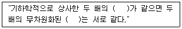
- 레이놀드수, 마찰저항계수
- 레이놀드수, 잉여저항계수
- 프루드수, 마찰저항계수
- 프루드수, 잉여저항계수
(정답률: 알수없음)
4. 상갑판 또는 선저에 걸리는 굽힘허용응력이 170 N/mm2, 세로굽힘모멘트가 255000 t-m 인 선박의 선체 중앙단면의 단면계수는?
- 1.5 m3
- 14.7 m3
- 15.7 m3
- 2.0 m3
(정답률: 알수없음)
5. 내연기관선의 추진효율을 옳게 나타낸 식은? (단, EHP : 유효마력, THP : 추력마력, DHP : 전달마력, BHP : 제동마력)
- EHP/THP
- EHP/DHP
- THP/BHP
- EHP/BHP
(정답률: 알수없음)
6. 만재 입항시에 복원성이 나쁜 이유가 아닌 것은?
- 출항시 가득 찼던 연료가 항해 중 소모로 자유표면의 효과가 있다.
- 선저 탱크의 기름소모로 인해 중심이 상승한다.
- 산적화물선의 경우 횡요에 의해 화물이 한 쪽으로 쏠린다.
- 항해 중 밸러스트 탱크에 해수를 채우므로 배수량이 증가한다.
(정답률: 알수없음)
7. 메타센터 높이(GM)를 계산하는 옳은 식은? (단, KB : 기선으로부터 부심까지의 연직높이, KG : 기선으로부터 무게중심까지의 연직높이, BM:메타센터 반지름)
- GM = KB - BM – KG
- GM = KB + BM - KG
- GM = KB - BM + KG
- GM = KB + BM + KG
(정답률: 알수없음)
8. 선박의 타각 범위를 바르게 나타낸 것은?
- 좌, 우현 35°
- 좌, 우현 30°
- 좌현 30°, 우현 35°
- 좌현 35°, 우현 30°
(정답률: 알수없음)
9. 선박설계에 있어서 설계자가 결정해야 할 선박 특성은?
- 재화중량
- 형상계수
- 항해구역
- 항해속력
(정답률: 알수없음)
10. 선박으로부터의 해상 오염 방지를 위한 국제 협약은?
- SOLAS
- MARPOL
- ILLC
- KR
(정답률: 알수없음)
11. 선박이 선체의 수직 중심선축을 중심으로 주기적인 회전왕복 운동을 하는 것은?
- 롤링(rolling)
- 히빙(heaving)
- 서징(surging)
- 요잉(yawing)
(정답률: 알수없음)
12. 배의 선형계수 중 방형 계수(CB) 0.75, 중앙횡단면계수(CM) 0.98일 때, 주형계수(CP)는?
- 0.735
- 0.765
- 1.30
- 1.73
(정답률: 알수없음)
13. 만재배수 톤수에서 경하배수 톤수를 뺀 값은?
- 총 톤수
- 순 톤수
- 기준 배수 톤수
- 재화 톤수
(정답률: 알수없음)
14. 선박의 경사시험을 하는 목적은 다음 중 무엇을 구하기 위해서인가?
- 부면심 위치
- 부심 위치
- 중심 위치
- 경심 위치
(정답률: 알수없음)
15. 배가 정박하고 있을 때 통선 등에서 본선에 오르내리기 위해 현측에 설치되는 경사 사다리는?
- 부두 사다리
- 현측 사다리
- 도선 사용 사다리
- 불워크 사다리
(정답률: 알수없음)
16. 배수량 100 ton 의 배에서 1 ton 의 중량물을 가로방향으로 4 m 이동시켰을 때 길이 2 m 의 진자끝이 0.2 m 이동하였다. 이 때 메타센터 높이 GM은?
- 0.2 m
- 0.3 m
- 0.4 m
- 0.6 m
(정답률: 알수없음)
17. 선박의 저항에 관한 설명으로 옳은 것은?
- 마찰저항은 속도가 느릴수록 크다.
- 잉여저항은 조파저항과 조와저항 등의 합이다.
- 조파저항은 속도가 빠를수록 작다.
- 조와저항은 공기저항이다.
(정답률: 알수없음)
18. 선박기관의 연속최대출력에 대한 설명으로 틀린 것은?
- 보통 MCR로 약기한다.
- 주기관의 설계 조건상 24시간 이상의 연속 운전에서 낼 수 있는 안전 최대출력을 뜻한다.
- 2시간 동안 연속적으로 운전 가능한 과부하 출력을 말한다.
- 축계설계, 프로펠러의 강도 계산에 쓰이는 기준 마력이다.
(정답률: 알수없음)
19. 구명정에 관한 설명으로 틀린 것은?
- 만재상태에서 침수되어도 침몰해서는 안된다.
- 구명정의 정원은 구명정의 용적을 어떤 정해진 상수로 나누어서 구한다.
- 전승조원이 승선할 수 있는 구명정 1척만을 비치하도록 요구하고 있다.
- 구명정은 전문지식이 없는 사람도 쉽게 다룰 수 있어야 한다.
(정답률: 알수없음)
20. 다음 중에서 경두선을 잘못 설명한 것은?
- 무게 중심이 낮은 선박을 말한다.
- GM의 값이 커서 복원력이 매우 크다.
- 복원력이 크기 때문에 승선감이 매우 좋다.
- 작업선이나 어선의 경우에 경두선이 많다.
(정답률: 알수없음)
2과목: 조선유체역학 및 재료역학
21. 그림과 같은 단면을 갖는 단순보의 중앙에 집중하중 20kN이 작용할 때 최대 전단응력은 몇 MPa인가?
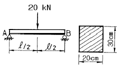
- 0.25
- 0.3
- 0.35
- 0.52
(정답률: 알수없음)
22. 안지름이 180cm, 두께 15mm인 원통형 보일러 용기 안의 압력이 1 MPa일 때, 이 용기에 발생하는 최대 응력은 몇 MPa 인가?
- 30
- 60
- 300
- 600
(정답률: 알수없음)
23. 이상기체에 관한 설명으로 틀린 것은?
- 기체의 비중량은 보일-샬의 법칙에서 구한다.
- 기체의 비중량은 압력에 비례하고 절대온도에 반비례한다.
- 기체상수의 값은 가스의 종류에 따라 다르며 각 가스의 분자량과 반비례하는 관계가 있다.
- 모든 가스 1mole이 차지하는 체적은 20.4 m3이다.
(정답률: 알수없음)
24. 곡면에 작용하는 힘의 수평 분력은?
- 곡면의 수직 상방의 액체의 무게
- 그의 면심에서 압력에 면적을 곱한 것
- 곡면을 수직면에 투영한 면적에 작용하는 힘
- 곡면에 의해서 지지된 액체의 무게
(정답률: 알수없음)
25. 코일스프링에 60 N의 힘을 작용시켰더니 2.7cm 줄었다. 이 때 스프링에 저장된 탄성에너지는 몇 N.cm인가?
- 162
- 81
- 73
- 92
(정답률: 알수없음)
26. 평판 위를 흐르는 유체 유동에 대한 설명으로 틀린 것은?
- 유속의 법선방향 구배는 거의 0 이다.
- 유속의 접선성분은 0 이다.
- 유속의 법선성분은 0 이다.
- 압력 구배는 거의 0 이다.
(정답률: 알수없음)
27. 운동량의 단위는?
- kgf.sec2/m
- kgf.m/sec
- kgf.sec
- kgf
(정답률: 알수없음)
28. 그림과 같은 Y축에 대칭인 Ⅰ형 단면의 도심
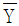
는?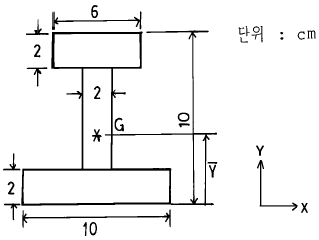
- 3.25
- 4.27
- 5.67
- 6.80
(정답률: 알수없음)
29. 바다 속을 운항하는 잠수함이 28 kgf/cm2 의 절대압력을 받고 있다. 이 때의 깊이는? (단, 이 때의 대기압은 1.0332 kgf/cm2이다.)
- 38.00 m
- 35.27 m
- 24.32 m
- 26.31 m
(정답률: 알수없음)
30. 배가 물 위를 10 m/sec 로 지나간다. 배 뒤의 프로펠러를 지난 후의 물의 후류속도가 8 m/sec 이고, 프로펠러의 지름이 0.8 m 이면, 추력은 몇 kgf 인가?
- 5742 kgf
- 5642 kgf
- 5542 kgf
- 5442 kgf
(정답률: 알수없음)
31. 수평 원관의 층류유동에 관한 설명으로 틀린 것은?
- 속도 분포는 2차원 포물선으로 된다.
- 벽면에서의 속도는 평균속도의 반이다.
- 최대속도는 평균속도의 2배이다.
- 원관의 중심에서 최대속도가 된다.
(정답률: 알수없음)
32. 그림과 같은 직사각형 단면의 단주 기둥에 e=2mm의 편심거리에 P=100kN의 압축하중이 작용할 때 발생하는 최대압축응력을 구하면 몇 MPa인가?
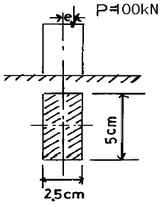
- 89.8
- 91.4
- 102.5
- 118.4
(정답률: 알수없음)
33. 그림과 같이 길이 2m인 외팔보에 300N, 100N의 2개의 집중하중이 작용하고 있을 때 고정단에 생기는 굽힘모멘트의 크기는 몇 N·m인가?
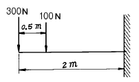
- 100
- 400
- 700
- 750
(정답률: 알수없음)
34. 앙각이 4도인 어떤 날개에 작용하는 양력이 100 N 이다. 이 날개의 앙각을 2도로 바꾸면 양력은?
- 50 N
- 100 N
- 75 N
- 25 N
(정답률: 알수없음)
35. 그림과 같이 삼각형 분포하중을 받는 단순보가 있다. A단에서의 반력 RA는 몇 N인가? (단, ωo=800 N/m)
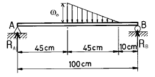
- 24
- 36
- 54
- 72
(정답률: 알수없음)
36. 안지름 0.1 m 인 수평 원관 내를 평균유속 5 m/sec 로 물이 흐르고 있다. 길이 10 m 사이에서 나타나는 손실수두는? (단, 관마찰계수는 0.013이다.)
- 1.43 m
- 1.78 m
- 3.32 m
- 1.66 m
(정답률: 알수없음)
37. 단면의 주축에 관한 설명 중 옳은 것은?
- 주축에서는 단면 2차 모멘트가 0 이다.
- 주축에서는 단면 상승 모멘트가 0 이다.
- 주축에서는 극단면 2차 모멘트가 0 이다.
- 주축에서는 단면 상승 모멘트가 최대이다.
(정답률: 알수없음)
38. 지름 4cm, 길이 1m인 연강의 한 끝을 고정하고 다른 끝에 588 N.m의 비틀림 모멘트가 작용할 때 이 봉에 생기는 최대 전단응력은 몇 MPa인가?
- 36.82
- 46.82
- 56.28
- 66.28
(정답률: 알수없음)
39. 벤츄리 미터에 관한 설명으로 옳은 것은?
- 유속을 직접 측정하는 계기이다.
- 압력차를 측정하여 유량을 계산한다.
- 수평관로에만 사용할 수 있다.
- 베르누이의 정리와는 무관하다.
(정답률: 알수없음)
40. 보에서 탄성곡선의 곡률로 옳은 것은? (단, ρ는 곡률반지름, E는 탄성계수, I는 단면2차모멘트, M은 굽힘 모멘트)
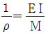
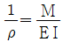
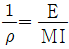
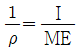
(정답률: 알수없음)
3과목: 선체구조학
41. 선체 선수선저부의 보강구조는?
- 팬팅구조
- 덕트 킬
- 혼합식 구조
- 이중저 구조
(정답률: 알수없음)
42. 다음 갑판 중 기능상 그 성질이 다른 것은?
- 건현갑판
- 상갑판
- 격벽갑판
- 대갑판
(정답률: 알수없음)
43. 선박에서 새깅과 호깅상태의 응력을 담당하는 부재가 아닌 것은?
- 용골
- 중심선 거더
- 늑판
- 상갑판
(정답률: 알수없음)
44. 살물 운반선(bulk carrier)에서 갑판하의 선측 탱크(side tank)를 경사지게 설치하는 가장 큰 이유는?
- 화물의 이동 공간을 적게하여 복원성을 높이기 위함이다.
- 종강도를 크게 하여 굽힘모멘트에 대처하기 위함이다
- 발라스트용으로 사용할 때 중심을 좀 더 낮추기 위함이다.
- 화물의 하역을 용이하게 하기 위함이다.
(정답률: 알수없음)
45. 표준 늑골심거(frame space)란?
- 두 늑골 중심에서 중심까지
- 한 늑골의 배면에서 다음 늑골의 배면까지
- 한 늑골의 배면에서 다음 늑골의 앞면까지
- 한 늑골에서 다음 늑골까지
(정답률: 알수없음)
46. 선체가 새깅 상태(sagging condition)에 있을 때 최대압축 응력이 발생하는 부분은?
- 갑판
- 선저외판
- 선측외판
- 횡격벽판
(정답률: 알수없음)
47. 선수 형상에서 구상 선수를 채용하는 일반적 이유는?
- 외형을 좋게 하기 위하여
- 충돌시에 대비하여
- 조파 저항을 줄이기 위하여
- 선체 용적을 증가시키기 위하여
(정답률: 알수없음)
48. 선체에서 집중하중이 걸리는 부분에 대한 보강법이 아닌 것은?
- 마스트와 같이 큰 모멘트가 작용하는 곳은 사방에 큰 브래킷을 설치한다.
- 집중하중이 걸리는 갑판의 넓은 부위에 이중판을 대어 견고히 한다.
- 집중하중 직하의 횡격벽은 집중하중에 의한 변형이 생기므로 가능한 필러나 갑판 빔으로 대치한다.
- 갑판에서 휨 변형이 생기기 쉬운 곳의 하부에는 필러를 설치한다.
(정답률: 알수없음)
49. 기관실내 기계류를 지지하기 위하여 받침기초를 설치할 경우 강도상으로 고려해야 할 사항이 아닌 것은?
- 응력이 집중되지 않도록 한다.
- 하중이 선체구조부재에 넓게 분포되지 않도록 한다.
- 선체구조 부재에서 얻을 수 있는 지지효과를 활용한다.
- 받침기초에 굽힘모멘트에 의한 선체응력이 전달되지 않도록 한다.
(정답률: 알수없음)
50. 종식 구조양식을 주로 채용하는 선박은?
- 여객선
- 화물선
- 유조선
- 화객선
(정답률: 알수없음)
51. 횡식구조 선박에서 횡강도 담당부재가 아닌 것은?
- 보
- 늑골
- 늑판
- 중심선 내용골
(정답률: 알수없음)
52. 창내 늑골(hold frame)만으로 횡강도가 충분하지 못하다고 생각되는 개소의 보강을 위하여 설치하는 것은?
- 특설늑골(web frame)
- 실체늑판(solid floor)
- 조립늑판(open floor)
- 중심선 거더(center girder)
(정답률: 알수없음)
53. 선체부재 중 단면계수의 계산에 포함되지 않은 것은?
- 평판용골
- 현측후판
- 갑판거더
- 갑판특설보
(정답률: 알수없음)
54. 파형격벽에 대한 설명으로 옳은 것은?
- 스팬이 6.1m 를 넘을 때는 중간에 트리핑 브래킷을 둔다.
- 오직 수직 파형만으로 제작되고 있다.
- 일반격벽보다 강도는 좋으나 중량이 무겁다.
- 포장화물이나 부피가 큰 화물을 적재하는 경우에도 굴곡부로 인한 적재량 손실이 없다.
(정답률: 알수없음)
55. 연료유 탱크와 윤활유 탱크 사이 및 이들과 청수탱크 사이에 설치하는 것은?
- 디프 탱크
- 라이더 판
- 대판
- 코퍼댐
(정답률: 알수없음)
56. 타(rudder)의 설치 시 타 트렁크(rudder trunk) 또는 갑판 관통부를 통한 해수의 침입을 막기 위해 패킹상자를 붙이는 데 이것의 명칭은?
- 스테딩 박스(steading box)
- 러더 스토퍼(rudder stopper)
- 스터핑 박스(stuffing box)
- 점핑 스토퍼(jumping stopper)
(정답률: 알수없음)
57. 선박의 횡요(rolling)시에 갑판은 바닥구조에 대하여 옆으로 움직이려 하고, 한쪽 외판은 반대쪽에 대해서 연직으로 움직이려 하는 횡변형 현상은?
- 랙킹(racking)
- 팬팅(panting)
- 슬래밍(slamming)
- 해머링(hammering)
(정답률: 알수없음)
58. 기둥(pillar)의 좌굴(buckling) 원인이 아닌 것은?
- 진동 등 기타의 원인으로 축방향으로 비대칭의 힘이 작용할 때
- 하중이 기둥 축선에 일치하지 않을 때
- 축방향으로 인장하중이 과도하게 작용할 때
- 재질이 불균일할 때
(정답률: 알수없음)
59. 갑판의 설계시 고려하는 상갑판 위의 최대하중은?
- 0.720 ton/m2
- 1.100 ton/m2
- 1.530 ton/m2
- 1.568 ton/m2
(정답률: 알수없음)
60. 선체구조에 고장력강을 사용하는 주요 목적은?
- 강도를 높이고 선체중량의 경감을 위하여
- 용접성을 향상시키기 위하여
- 선각공수의 절감을 위하여
- 응력집중 현상을 방지하기 위하여
(정답률: 알수없음)
4과목: 선박건조학 및 선박동력장치
61. 공기표준 내연기관 사이클에서 공급 열량, 초압 및 초온과 압축비가 같을 때, 각 이론 열효율의 순서가 높은 것부터 옳게 나열된 것은? (단, 오토 사이클의 이론 열효율 : ηtho, 디이젤 사이클의 이론 열효율 : ηthd, 사바데 사이클의 이론 열효율 : ηths )
- ηths ＞ ηthd ＞ ηtho
- ηtho ＞ ηths ＞ ηthd
- ηtho ＞ ηthd ＞ ηths
- ηths ＞ ηtho ＞ ηthd
(정답률: 알수없음)
62. 다음과 같이 용접방향과 용착방향이 반대인 용접법은?
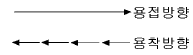
- 전진법
- 대칭법
- 후퇴법
- 비석법
(정답률: 알수없음)
63. 선박 건조의 공작관리도표를 작성하는 데 있어서 가장 중요한 것은?
- 생산성
- 관리성
- 기술성
- 경제성
(정답률: 알수없음)
64. 프로펠러의 캐비테이션 원인이 아닌 것은?
- 형상이 불량할 때
- 날개 끝이 얇을 때
- 회전속도가 임계치 이상일 때
- 수면 가까이서 회전할 때
(정답률: 알수없음)
65. 경사선대에서 선박을 진수할 경우 진수계산 항목이 아닌 것은?
- 선미부양까지의 활주거리
- 포핏에 작용하는 압력
- 진수 후의 흘수
- 자유부양 후의 선박 속도
(정답률: 알수없음)
66. 필렛 용접이음에서 틈새가 3 ∼ 4 mm 정도로 발생했다. 이 경우 보정 방법으로 옳은 것은?
- 라이너 삽입 용접
- 뒷면 댐쇠 사용 용접
- 푹 150 ∼ 200 mm 취환
- 다리길이(각장)를 증가시켜 용접
(정답률: 알수없음)
67. 열간가공은 강재를 가열하여 해머 등으로 외력을 가하여 가공을 하는 방법이다. 이 때 가능한 피해야 하는 가열 온도의 범위는?
- 950 ℃ 이상
- 850 ∼ 900 ℃
- 250 ∼ 450 ℃
- 250 ℃ 미만
(정답률: 알수없음)
68. 직접 분사식 디젤 기관의 설명 중 틀린 것은?
- 비교적 폭발압력이 낮다.
- 연소실 표면적이 가장 작다.
- 구조가 간단하다.
- 분사압력은 200 kg/cm2 이상이다.
(정답률: 알수없음)
69. 선체 건조 작업시 스트롱 백(strong back)이란?
- 용접시 루트부의 과용융으로 인한 용락을 방지하기 위해 이음부 뒤편에 대는 백킹판
- 용접시 변형을 방지하거나 이음부 판재의 상대위치를 정확히 하기 위해 사용하는 판
- 고소 작업시에 작업이 가능하도록 임시로 붙이는 발판
- 용접의 시작부와 끝부분에 결함이 남는 것을 방지하기 위해 판 시작부 및 끝부에 부착하는 작은 판
(정답률: 알수없음)
70. 건조 선대(dry dock)의 활용도를 높이는 방법으로 먼저 건조되는 선박의 건조와 병행하여 다음 건조될 선박의 선미부를 선대에서 같이 건조하는 건조법은?
- 횡이동법
- 압출식 건조법
- 쎄미탄뎀법
- 2중 건조법
(정답률: 알수없음)
71. 디젤기관용 감속장치에 관한 설명으로 옳은 것은?
- 디젤기관에는 역전식 감속장치는 쓰이지 않는다.
- 디젤기관용 감속 치차장치는 토크 변동이 작다.
- 축 발전기에는 증속 치차장치를 이용한다.
- 디젤기관용 유성치차장치는 솔라형을 가장 많이 채용한다.
(정답률: 알수없음)
72. 다음 중 가공공사에 속하지 않는 작업은?
- 마킹
- 절단
- 굽힘
- 선행의장
(정답률: 알수없음)
73. 가스터빈 기관의 효율을 높이기 위한 것이 아닌 것은?
- 중간 냉각기
- 재열기
- 과급기
- 재생기
(정답률: 알수없음)
74. 보슈식 연료분사 펌프에 관한 설명으로 틀린 것은?
- 토출밸브에는 감압 피스톤이 달려 있다.
- 플런저와 배럴의 간극은 플런저 지름의 0.3/1,000 ~ 0.4/1,000배이다.
- 보슈식 연료분사 펌프는 플런저 크기로 구분하며 종류는 4가지 뿐이다.
- 플런저 재료는 특수 공구강, 크롬강 등을 사용한다.
(정답률: 알수없음)
75. 선박건조의 일반적인 공정순서는?
- 현도공사→ 가공공사→ 탑재공사→ 조립공사→ 진수공사
- 현도공사→ 가공공사→ 선대공사→ 조립공사→ 진수공사
- 현도공사→ 조립공사→ 가공공사→ 진수공사→ 탑재공사
- 현도공사→ 가공공사→ 조립공사→ 선대공사→ 진수공사
(정답률: 알수없음)
76. 플라이 휠(fly wheel)의 작용으로 가장 적절한 것은?
- 엔진의 회전을 빠르게
- 엔진의 회전을 원활히
- 캠 축의 회전을 빠르게
- 감속기 설치를 위해
(정답률: 알수없음)
77. 디젤 기관의 노킹(knocking) 방지법으로 옳은 것은?
- 회전을 빠르게 한다.
- 압축비를 높인다.
- 흡입온도를 낯춘다.
- 발화점이 높은 연료를 사용한다.
(정답률: 알수없음)
78. 4행정 기관과 비교한 2행정 기관의 특징 설명으로 잘못된 것은?
- 실린더 부피가 같은 경우 1.2~1.5배의 출력을 얻을 수 있다.
- 배기작용이 충분하고 고속기관에 적합하다.
- 같은 출력의 4행정 기관보다 부피와 무게가 작다.
- 저속 회전이 불안정하고, 저속시 회전력이 낮다.
(정답률: 알수없음)
79. 과급(過給) 디젤 기관의 이점이라고 볼 수 없는 것은?
- 기관출력을 50 % 정도 증가시킬 수 있다.
- 기관 설치면적이 커져서 안정도가 있다.
- 마력당의 중량을 30~40 % 감소시킨다.
- 연소가 잘 된다.
(정답률: 알수없음)
80. 선체 블록을 분할할 경우 고려하는 사항이 아닌 것은?
- 크레인의 능력
- 지상조립의 공작 및 회전 조건
- 탑재 시기의 결정
- 선대 공작상의 여건
(정답률: 알수없음)